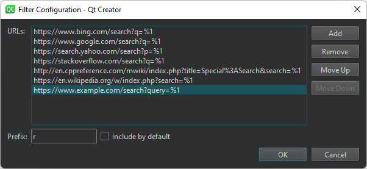

Searching with the Locator
The locator is the fastest way to find a particular project, file, class, or function, or almost anything else in your project.
By default, you can find the locator in the bottom left of the Qt Design Studio window. To open it as a centered popup, click (Options) in it and select Open as Centered Popup.

Activating the Locator
To activate the locator:
- Press Ctrl+K (Cmd+K on macOS).
- Select Tools > Locate.
- Select Edit > Go to Line.
- Click the line and column indicator on the editor toolbar.
Using Locator Filters
You can locate not only files, but any items defined by locator filters, as well as trigger global actions and perform other tasks, such as build projects or run external tools.
The filters that are available depend on the file type. For more information about what a particular locator filter does, see the tooltips that appear when you hover over a filter in the locator. For longer descriptions of the filters, select Configure to open the Locator preferences.
To use a locator filter, type its prefix followed by Space. The prefix is usually short, from one to three characters. Then type the search string (for example, a filename or class name) or the command to execute.
You can also double-click a locator filter in the filter list to use it. Use the up and down arrow keys or the Ctrl+P and Ctrl+N keyboard shortcuts to move up and down the list, and then press Enter to use the selected filter.
As you type a search string, the locator shows the occurrences of that string regardless of where in the name of an component it appears. Some locator filters, such as colon, m, and t, support fuzzy matching, which means that you can enter the uppercase letters to locate a symbol when using camel case or the letters after the underscore when using snake case.
To narrow down the search results, use the following wildcard characters:
- To match any number of any or no characters, enter
*. - To match a single instance of any character, enter
?.
Locating Files
You can locate files in the local file system or on connected devices. By default, the file system filter shows the files in the same folder as the currently open file and lets you navigate the file system. Also, it shows items that let you switch to another device root.
For example, to open a QML file called HelloWorld.qml in the currently open project using the locator:
- Press Ctrl+K to activate the locator.
- Start typing the filename.

- Use the arrow keys to move to the filename in the list and press Enter.
The file opens in the editor.
- To move to a line in the file, enter the line number in the locator.
If the path to a file is very long, it might not fit into the locator window. To view the full path, press Alt when the filename is selected or use the handle next to the locator window to increase the window width.
Locating Files from Global File System Index
You can install tools such as Spotlight, Locate, or Everything and use them to locate files from a global file system index. Use the md locator filter to locate the files.
To use the sorting from the selected tool instead of from Qt Design Studio, deselect the Sort results check box in the md locator filter configuration.
Locating Lines and Columns
To move directly to a particular line and column in the document when you open the document, append the line and column number to the file name in the locator, separated by plus signs (+) or colons (:).
For example, to open HelloWorld.qml to line 41 and column 2, enter:
HelloWorld.qml:41:2
Creating Files and Directories from Locator
To create a new file and open it in the editor, type f followed by Space, followed by path and file name, and then press Enter or select Create and Open File. To create a directory, select Create Directory.
Opening Sessions from Locator
You can use the filter that triggers menu commands to open sessions. Enter t yoursess or t sess yoursess to trigger File > Sessions > <session_name>.
Default Filters
By default, you can use the following preset locator filters without a prefix:
- Going to a line and column in the current file (
l). - Going to an open file (
o). - Going to a file in any open project (
a).
Changing Locator Filters
You can change the preset locator filters to match your use case. For example, you can change the filter prefix and restrict the search to items that match the filter.

To configure a locator filter:
- In the locator, click (Options) and select Configure to open the Locator preferences.
- Select a filter, and then select Edit.
- Specify the prefix string.
- To implicitly include the filter even when not typing a prefix as a part of the search string, select Include by default.
- Set other available preferences.
Adding Web Search Engines
You can use the Web Search (r) locator filter to perform web searches. URLs and search commands for Bing, Google, Yahoo! Search, cplusplus.com, and Wikipedia are configured by default.
To find out the format of the search command to use for your favorite web search engine, perform a search in your browser and copy the resulting URL to the locator filter configuration. Replace the search term with the variable %1.
To add URLs and search commands to the list:
- Select Preferences > Environment > Locator > Web Search > Edit.
- Select Add to add a new entry to the list.

- Double-click the new entry to specify a URL and a search command. For example,
http://www.google.com/search?q=%1. - Click OK.
Creating Locator Filters
You can create custom locator filters for searching in a directory structure or on the web.
To quickly access files not directly mentioned in your project, you can create your own directory filters. That way you can locate files in a directory structure you have defined.
To create custom locator filters:
- In the locator, select Options > Configure to open the Locator preferences.

- Select Add > Files in Directories to add a directory filter or URL Template to add a URL filter. The settings to specify depend on the filter type.

- In the Name field, enter a name for your filter.
- In the Directories field, select at least one directory. The locator searches directories recursively.
- In the File pattern field, specify file patterns to restrict the search to files that match the pattern. Separate the patterns with commas. For example, to search for all
.qmland.ui.qmlfiles, enter*.qml,*.ui.qml - In the Exclusion pattern field, specify file patterns to omit files from the search.
- In the Prefix field, specify the prefix string.
To implicitly include the filter even when not typing a prefix as a part of the search string, select Include by default.
- Select OK.
Configuring Locator Cache
The locator searches the files matching your file pattern in the directories you have selected and caches that information. Qt Design Studio updates the cache for all preset filters as you write code. By default, Qt Design Studio updates your custom filters once an hour.
To update the cached information manually, select Options > Refresh in the locator.
To set a new cache update time:
- Select Preferences > Environment > Locator.
- In Refresh interval, define new time in minutes.
Executing JavaScript
The locator has a JavaScript interpreter for performing calculations.
Beside simple mathematical operations, like ((1 + 2) * 3), the following built-in functions exist:
| Function | Purpose |
|---|---|
| abs(x) | Returns the absolute value of x |
| acos(x) | Returns the arccosine of x, in radians |
| asin(x) | Returns the arcsine of x, in radians |
| atan(x) | Returns the arctangent of x, in radians |
| atan2(x, y) | Returns the arctangent of the quotient of its arguments |
| bin(x) | Returns the binary representation of x |
| ceil(x) | Returns the value of x rounded up to the next integer |
| cos(x) | Returns the cosine of x (x is in radians) |
| exp(x) | Returns the value of E to the power of x |
| e() | Returns Euler's number E (2.71828...) |
| floor(x) | Returns the value of x rounded down to the next integer |
| hex(x) | Returns the hexadecimal representation of x |
| log(x) | Returns the natural logarithm (base E) of x |
| max([value1[, value2[, ...]]]) | Returns the highest value of the given numbers |
| min([value1[, value2[, ...]]]) | Returns the lowest value of the given numbers |
| oct(x) | Returns the octal representation of x |
| pi() | Returns PI (3.14159...) |
| pow(x, y) | Returns the value of x to the power of y |
| random() | Returns a random number between 0 and 1 |
| round(x) | Returns the value of x rounded to the next integer |
| sin(x) | Returns the sine of x (x is in radians) |
| sqrt(x) | Returns the square root of x |
| tan(x) | Returns the tangent of x (x is in radians) |